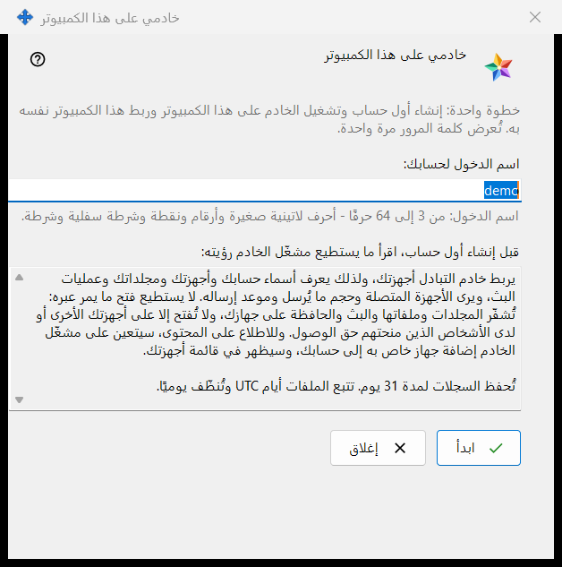
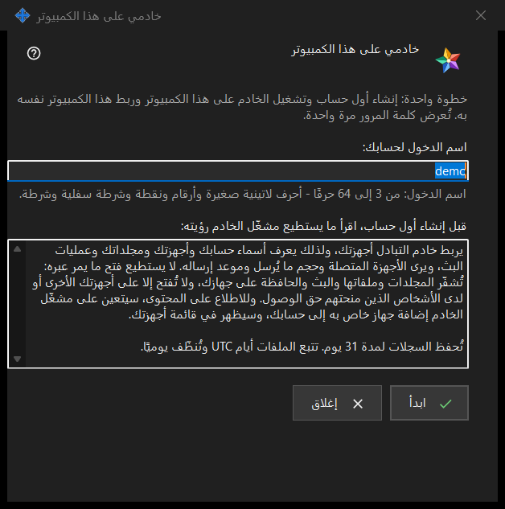

خادمي على هذا الكمبيوتر
الغرض من هذه النافذة
يُعدّ هذا المعالج خادم Media Exchange Server شخصيًا على هذا الكمبيوتر دفعة واحدة: ينشئ أول حساب، ويشغّل الخادم، ثم يربط هذا الكمبيوتر نفسه به. تُفتح النافذة من الزر استخدام هذا الكمبيوتر كخادم لي.. في صفحة Media Exchange Server ضمن إعدادات Share Manager، ولا يظهر هذا الزر إلا ما دام لا يوجد خادم معدّ على هذا الكمبيوتر.


بهذا الترتيب
- راجع اسم الدخول المقترح، وهو مأخوذ من اسم مستخدم Windows لديك، أو اكتب اسمًا من عندك.
- اقرأ البيان الذي يوضح ما يستطيع المشغّل رؤيته.
- اضغط ابدأ وانتظر الخطوات الأربع.
- انسخ كلمة المرور فورًا، ثم البصمة أو سلسلة الاتصال لأجهزتك الأخرى.
- اضغط إغلاق.
عناصر النافذة
اسم الدخول
يقبل الحقل اسم الدخول لحسابك من 3 إلى 64 حرفًا، وهي الأحرف اللاتينية الصغيرة والأرقام والنقطة والشرطة السفلية والواصلة؛ وتُحوَّل الأحرف الكبيرة إلى صغيرة. يتحول التلميح أسفل الحقل إلى لون التحذير ما دام النص لا يصلح اسم دخول، ولا يفعل الزر ابدأ شيئًا حتى يصبح صالحًا.
ما يستطيع المشغّل رؤيته
الصندوق المخصص للقراءة فقط أسفل السطر قبل إنشاء أول حساب، اقرأ ما يستطيع مشغّل الخادم رؤيته: يسرد ما يراه مشغّل الخادم عن الحسابات والأجهزة والمجلدات والبثوث والحافظة، وما لا يستطيع الخادم قراءته، وعدد أيام الاحتفاظ بالسجلات. وعلى خادمك الخاص أنت المشغّل.
الخطوات وحالات الفشل
يشغّل الزر ابدأ أربع خطوات ويذكر الجارية منها: جارٍ إنشاء الحساب.. ثم جارٍ تشغيل الخادم.. ثم جارٍ فحص الشهادة.. ثم جارٍ ربط هذا الكمبيوتر.. ويبقى اسم الدخول مقفلًا ولا يمكن إغلاق النافذة خلال ذلك. وإذا لم يُنشأ أي حساب، تذكر جملة السبب، مثل: هذا الحساب موجود بالفعل - اختر اسم دخول آخر. صحّح اسم الدخول واضغط ابدأ مرة أخرى.
النتيجة والعناوين
عند النجاح تعرض النافذة الجملة تم: الخادم يعمل والحساب مُنشأ وهذا الكمبيوتر متصل به. ثم تسرد البنود العنوان لهذا الكمبيوتر، والعنوان للأجهزة الأخرى (ويقرأ غير محدد - أدخله في إعدادات خادم التبادل إلى أن يُحدَّد هذا العنوان)، واسم المستخدم، وكلمة المرور (تُعرض مرة واحدة)، وبصمة الشهادة. وبعد تحديد العنوان للأجهزة الأخرى يُضاف البند سلسلة الاتصال. وإذا لم يبدأ الخادم فإن الحساب يبقى موجودًا وتُعرض كلمة مروره مرة واحدة في الأسفل.
كلمة المرور والنسخ
كلمة المرور مخفية بأقنعة. يكشفها الزر إظهار كلمة المرور، وينسخها الزر نسخ كلمة المرور إلى الحافظة عبر المسار المحمي الذي يُبقيها خارج سجل حافظة Windows والحافظة السحابية. لا تعرضها النافذة إلا هذه المرة، ما لم يكن الخيار حفظ كلمات مرور الحسابات على هذا الكمبيوتر مفعّلًا. أما الزران نسخ البصمة ونسخ السلسلة فيجريان نسخًا عاديًا: لا يحوي أي منهما كلمة مرور. تحتاج الأجهزة الأخرى إلى العنوان واسم المستخدم وكلمة المرور والبصمة، وتقارن البصمة عند أول اتصال.
الإغلاق
إذا لم تُنسخ كلمة المرور ولم تُكشف ولم تُحفظ على هذا الكمبيوتر، فإن الزر إغلاق يسأل: هل تريد الإغلاق دون نسخ كلمة المرور؟ ويكون الجواب الافتراضي لا، لأن كلمة المرور لا يمكن عرضها مجددًا بل إعادة تعيينها فقط.